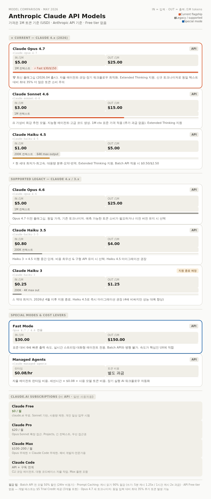
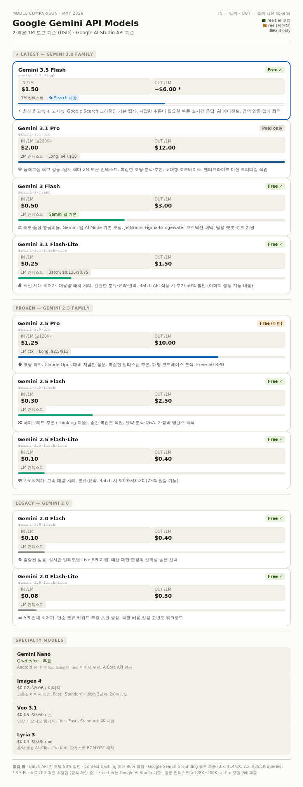
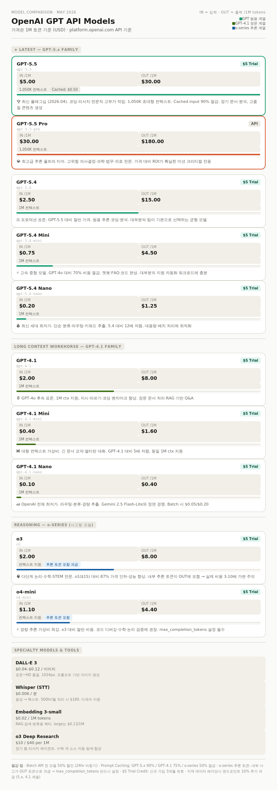

Anthropic Claude
Model Cost

Config File
- ~/.claude/settings.json
Direct Subscription
From Bedrock To Subscription
핵심 사실 (공식 문서 기준):
Pro 구독으로 Claude Code를 사용할 때 API 키는 필요 없습니다. 단, ANTHROPIC_API_KEY 환경 변수가 설정되어 있으면 Claude Code가 구독 대신 API 키로 인증하여 추가 비용이 발생합니다.
Step 1: 현재 설정 파일 수정
~/.claude/settings.json 에서 Bedrock 관련 항목을 전부 제거합니다:
// 변경 전
{
"env": {
"CLAUDE_CODE_USE_BEDROCK": "1",
"AWS_REGION": "us-east-1",
"ANTHROPIC_MODEL": "global.anthropic.claude-opus-4-6-v1",
"ANTHROPIC_DEFAULT_OPUS_MODEL": "global.anthropic.claude-opus-4-6-v1",
"ANTHROPIC_DEFAULT_SONNET_MODEL": "global.anthropic.claude-sonnet-4-6",
"ANTHROPIC_DEFAULT_HAIKU_MODEL": "global.anthropic.claude-haiku-4-5-20251001-v1:0"
}
}
// 변경 후
{}Step 2: 환경 변수 오염 여부 확인 (중요)
# API 키 환경 변수가 있는지 반드시 확인
echo $ANTHROPIC_API_KEY
echo $CLAUDE_CODE_USE_BEDROCK
# 값이 출력되면 제거
unset ANTHROPIC_API_KEY
unset CLAUDE_CODE_USE_BEDROCK
unset AWS_REGION~/.zshrc 또는 ~/.bashrc에서도 해당 변수가 있으면 삭제 후 source ~/.zshrc 실행.
Step 3: Pro 계정으로 재로그인
기존 세션이 있다면 /logout으로 완전히 로그아웃 후, claude update 실행 후 터미널을 재시작하고 claude를 실행하여 올바른 계정을 선택합니다.
# Claude Code 터미널 내부에서
/logout
# 터미널에서
claude update
# 터미널 완전 종료 후 재시작
claude # → Pro 계정 선택하여 로그인Step 4: 사용 상태 확인
# Claude Code 내부에서
/status구독 계정으로 연결됐는지 확인합니다. API 계정이 표시되면 Step 2의 환경 변수를 다시 점검하세요.
/status
**/status** 주요 출력 항목 → 조정 가능 여부
| 항목 | 조정 가능 | 설정 키 |
|---|---|---|
| Model | ✅ | ANTHROPIC_MODEL |
| Context window used % | ✅ | CLAUDE_AUTOCOMPACT_PCT_OVERRIDE |
| Setting sources | ✅ | 파일 위치 변경 |
| Rate limits (5h / 7d) | ❌ | Pro 플랜 상한 고정 |
| Account / Auth | ❌ | /login 으로만 변경 |
1. Model — 기본 Sonnet을 Opus로 고정
/status에서 현재 모델이 Sonnet으로 표시된다면:
// ~/.claude/settings.json
{
"env": {
"ANTHROPIC_MODEL": "claude-opus-4-20250514"
}
}반대로 Opus가 기본이고 비용(쿼터) 절약이 목적이면 Sonnet으로 낮추는 것도 유효합니다.
2. Context window used % — auto-compact 트리거 조정
CLAUDE_AUTOCOMPACT_PCT_OVERRIDE는 1~100 사이 값을 받으며, 기본 약 83.5%에서 auto-compact가 발동하는 시점을 직접 제어합니다. 낮추면 더 일찍 압축되어 이후 턴 비용이 줄고, 높이면 컨텍스트를 더 길게 사용합니다.
{
"env": {
"CLAUDE_AUTOCOMPACT_PCT_OVERRIDE": "70"
}
}3. Setting sources — 로드되는 설정 파일 확인 및 정리
/status의 Setting sources 항목은 현재 세션에 로드된 설정 레이어를 보여주며, 키가 하나라도 있는 소스만 표시됩니다.
불필요한 설정 파일(예: 이전 Bedrock 설정이 남은 파일)이 로드되고 있다면 제거하여 충돌을 방지합니다.
# 로드 중인 설정 파일 직접 확인
cat ~/.claude/settings.json
cat ~/.claude.json # 레거시 앱 상태 파일4. Rate limits — 확인 용도만, 조정 불가
statusline에 rate_limits 필드가 추가되어 5시간·7일 윈도우의 사용률(used_percentage)과 리셋 시각(resets_at)을 볼 수 있습니다. 이 값 자체는 Pro 플랜 한도에 고정이므로 설정으로 변경할 수 없고, 모니터링 용도로만 활용합니다.
settings.json
1. **CLAUDE_AUTOCOMPACT_PCT_OVERRIDE** (가장 효과 큼)
기본값은 약 83.5%에서 auto-compact가 발동합니다. 60~75%로 낮추면 더 일찍 압축이 실행되어 이후 턴에서 누적 컨텍스트 비용이 줄어듭니다.
// ~/.claude/settings.json
{
"env": {
"CLAUDE_AUTOCOMPACT_PCT_OVERRIDE": "70"
}
}2. **DISABLE_NON_ESSENTIAL_MODEL_CALLS=1**
제안·팁 등 비핵심 기능용 백그라운드 모델 호출을 비활성화합니다. 핵심 워크플로우에는 영향 없이 백그라운드 토큰 소비를 줄입니다.
{
"env": {
"DISABLE_NON_ESSENTIAL_MODEL_CALLS": "1"
}
}3. **verbose: false** (Config 탭 토글과 동일)
Config 탭은 verbose 출력 등 고정된 토글 세트를 편집하는 곳입니다. verbose를 끄면 Claude의 장황한 설명 출력이 줄어 응답당 출력 토큰이 감소합니다.
{
"verbose": false
}4. **spinnerTipsEnabled: false**
Claude가 작업 중일 때 스피너에 팁을 표시하는 기능으로 기본값은 true입니다. 끄면 미미하지만 백그라운드 호출이 줄어듭니다.
{
"spinnerTipsEnabled": false
}통합 설정 예시:
// ~/.claude/settings.json
{
"env": {
"CLAUDE_AUTOCOMPACT_PCT_OVERRIDE": "70",
"DISABLE_NON_ESSENTIAL_MODEL_CALLS": "1"
},
"verbose": false,
"spinnerTipsEnabled": false
}효과 없는 것 (주의):
CLAUDE_CODE_MAX_OUTPUT_TOKENS는 응답 최대 길이를 제한할 뿐, auto-compact 버퍼와는 무관합니다. 토큰 절약 목적으로 설정해도 기대한 효과가 없습니다.
Using Amazon Bedrock
{
"env": {
"CLAUDE_CODE_USE_BEDROCK": "1",
"AWS_REGION": "us-east-1",
"ANTHROPIC_MODEL": "global.anthropic.claude-opus-4-6-v1",
"ANTHROPIC_DEFAULT_OPUS_MODEL": "global.anthropic.claude-opus-4-6-v1",
"ANTHROPIC_DEFAULT_SONNET_MODEL": "global.anthropic.claude-sonnet-4-6",
"ANTHROPIC_DEFAULT_HAIKU_MODEL": "global.anthropic.claude-haiku-4-5-20251001-v1:0"
}
}Using GCP
Account
Google for Developer
-
Standard
- Gemini CLI : 1K request per day
요금제 및 가격 | Google 개발자 프로그램 | Google Developer Program | Google for Developers
클라우드 아키텍처, 워크플로에 AI/ML 구현, Firebase 등에 관한 제안을 비롯해 전문가의 1:1 조언을 받으세요.
https://developers.google.com/program/plans-and-pricing?hl=ko
GEAR (Gemini Enterprise Agent Ready)
-
Standard
- 35 credit per day
Google AI Studio - projects/138589754283
- API Key
[REDACTED_GOOGLE_KEY]- cURL 빠른 시작
curl "https://generativelanguage.googleapis.com/v1beta/models/gemini-flash-latest:generateContent" \
-H 'Content-Type: application/json' \
-H 'X-goog-api-key: [REDACTED_GOOGLE_KEY]' \
-X POST \
-d '{
"contents": [
{
"parts": [
{
"text": "Explain how AI works in a few words"
}
]
}
]
}'Claude Model 연결
-
Marketplace Model은 무료 credit에서 제외
-
1M input token $3 (₩4,426.530002097)
-
1M output token $15 (₩22,132.650010487)
Using Azure
Gemini
API Key - eldanscript@gmail.com
- Project : gen-lang-client-0401278921 (Default Gemini Project)
[REDACTED_GOOGLE_KEY]API Key - rainbell72@gmail.com
- Project : gen-lang-client-0215169683 (Gemini AI Project Free Tier)
[REDACTED_GOOGLE_KEY]Model Selection
핵심 선택 가이드
| 상황 | 추천 모델 |
|---|---|
| 최고 성능, 비용 무관 | Gemini 3.1 Pro |
| 속도 + 지능 + Search 연동 | Gemini 3.5 Flash ★ |
| 프로덕션 범용 (기본값) | Gemini 3 Flash |
| 코딩·분석 가성비 | Gemini 2.5 Pro |
| 하이브리드 추론 (Thinking) | Gemini 2.5 Flash |
| 대용량 배치 최저가 | 2.5 Flash-Lite + Batch API |
| 온디바이스·프라이버시 | Gemini Nano |
Model Cost
https://ai.google.dev/gemini-api/docs/pricing?hl=ko

사용량 등급
https://ai.google.dev/gemini-api/docs/rate-limits?hl=ko
Free Tier Limitation
-
RPM (Requests Per Minute) : 5
-
TPM (Input Tokens Per Minute) : 250K
-
RPD (Requests Per Day) : 20
Tier 1 Limitation
-
RPM (Requests Per Minute) : 1000
-
TPM (Input Tokens Per Minute) : 1000K
-
RPD (Requests Per Day) : 10K
Grounding 비용 구조
핵심 원칙 3가지
사용자가 보낸 요청 하나가 Google Search 쿼리를 한 번 이상 발생시킬 수 있으며, 실제로 수행된 개별 검색 쿼리 건수마다 과금됩니다. 즉 과금 단위는 “프롬프트 수”가 아니라 “실제 검색 횟수”입니다.
-
Grounding은 Paid tier 전용 — Free tier에서는 사용 불가
-
토큰 비용(IN/OUT)과 별도 청구 (토큰 비용에 포함되지 않음)
-
검색 결과로 가져온 텍스트/이미지는 입력 토큰으로 과금되지 않음
Gemini 세대별 요금표
Gemini 3.x 계열 (3.5 Flash, 3.1 Pro, 3 Flash, 3.1 Flash-Lite)
Google Search 및 Google Maps Grounding 모두 월 5,000 프롬프트 무료 (Gemini 3 전 모델이 공유), 초과 시 $14 / 1,000 search queries
| 구분 | 무료 한도 | 초과 요금 |
|---|---|---|
| Google Search | 5,000 프롬프트/월 (Gemini 3 전체 공유) | $14 / 1,000 queries |
| Google Maps | 5,000 프롬프트/월 (Gemini 3 전체 공유) | $14 / 1,000 queries |
Gemini 2.x 계열 (2.5 Pro/Flash, 2.0 Flash 등)
| 구분 | 무료 한도 | 초과 요금 |
|---|---|---|
| Google Search | 500~1,500 RPD (모델별 상이) | $35 / 1,000 prompts |
| Google Maps | 제한적 지원 | $25 / 1,000 prompts |
3.x 대비 2.x는 2.5배 비싸고, 과금 단위도 “query”가 아닌 “prompt” 기준이라 실제 검색 횟수와 무관하게 청구됩니다.
비용 계산 예시
시나리오: Gemini 3 Flash로 하루 1,000건 Search Grounding 사용
→ 쿼리당 평균 2회 검색 발생 시
월간 검색 쿼리 = 1,000 × 30일 × 2회 = 60,000 queries
무료 공제 = 5,000 queries
과금 대상 = 55,000 queries
Grounding 비용 = 55,000 / 1,000 × $14 = $770/월
토큰 비용 = 별도 (IN $0.50 + OUT $3.00 기준)
Dynamic Retrieval로 비용 절감
모든 프롬프트에 Search를 쓰지 않고, 모델이 “검색이 필요한가”를 스스로 판단하게 설정하면 실제 쿼리 발생 수를 크게 줄일 수 있습니다.
from google.generativeai.types import (
Tool, GoogleSearchRetrieval, DynamicRetrievalConfig
)
tool = Tool(
google_search_retrieval=GoogleSearchRetrieval(
dynamic_retrieval_config=DynamicRetrievalConfig(
mode="MODE_DYNAMIC",
dynamic_threshold=0.8 # 0~1, 높을수록 검색 덜 함
)
)
)
# "피타고라스 정리란?" → threshold 넘음 → 검색 안 함 (비용 0)
# "오늘 환율은?" → threshold 미달 → 검색 실행 (과금)dynamic_threshold를 0.8 이상으로 설정하면 정적 지식으로 충분한 질문은 Search를 건너뛰어 비용이 대폭 절감됩니다.
GPT
Model Cost

Endpoint in AZure
raingent-openai-endpoint
-
key1
7X7Fk9hMRLq8BTMuNlLgp0iJ0BigfZw7AZEMYZWNREuRGrD9CMzlJQQJ99CEACNns7RXJ3w3AAABACOGQ7a2 -
key2
FDjxcniy9jLuH45c6HYkP4aaNzWeSP6UqRnuUDfGJ73zqrY9ZvPDJQQJ99CEACNns7RXJ3w3AAABACOGYuex -
endpoint
https://raingent-openai-endpoint.openai.azure.com/
Cost
https://azure.microsoft.com/ko-kr/pricing/details/azure-openai/